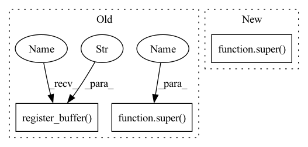

Pattern ID :703

Before Change
export = False // onnx export
def __init__(self, nc=80, anchors=(), ch=()): // detection layer
super(Detect, self).__init__()
self.nc = nc // number of classes
self.no = nc + 5 // number of outputs per anchor
self.nl = len(anchors) // number of detection layers
self.na = len(anchors[0]) // 2 // number of anchors
self.grid = [torch.zeros(1)] * self.nl // init grid
a = torch.tensor(anchors).float().view(self.nl, -1, 2)
self.register_buffer("anchors", a) // shape(nl,na,2)
self.register_buffer("anchor_grid", a.clone().view(self.nl, 1, -1, 1, 1, 2)) // shape(nl,1,na,1,1,2)
self.m = nn.ModuleList(nn.Conv2d(x, self.no * self.na, 1) for x in ch) // output conv
After Change
onnx_dynamic = False // ONNX export parameter
def __init__(self, nc=80, anchors=(), ch=(), inplace=True): // detection layer
super().__init__()
self.nc = nc // number of classes
self.no = nc + 5 // number of outputs per anchor
self.nl = len(anchors) // number of detection layers
In pattern: SUPERPATTERN
Frequency: 3
Non-data size: 3
Instances
Fragment ID: 2372480
Project Name: pooya-mohammadi/deep_utils
Commit Name: 7d442fe6eef7ccd63661e0463e87358ff795d709
Time: 2021-11-26
Author: practical.ai.programming@gmail.com
File Name: deep_utils/vision/object_detection/yolo/v5/torch/models/yolo.py
M Class Name: Detect
N Class Name: Detect
M Method Name: __init__(5)
N Method Name: __init__(4)
M Parent Class: nn.Module
N Parent Class: nn.Module
M File Name: deep_utils/vision/object_detection/yolo/v5/torch/models/yolo.py
N File Name: deep_utils/vision/object_detection/yolo/v5/torch/models/yolo.py
M Start Line: 29
M End Line: 37
N Start Line: 40
N End Line: 50
'>
Before Change
class LocalAffinity(nn.Module):
def __init__(self, dilations=[1]):
super(LocalAffinity, self).__init__()
self.dilations = dilations
weight = self._init_aff()
self.register_buffer("kernel", weight)
def _init_aff(self):
// initialising the shift kernel
weight = torch.zeros(8, 1, 3, 3)
After Change
class LocalAffinity(nn.Module):
def __init__(self, dilations=[1]):
super().__init__()
self.dilations = dilations
self.kernel = self._init_aff()
'>
Fragment ID: 2372478
Project Name: shjo-april/recurseed_and_edgepredictmix
Commit Name: 09d5aa66cbdfd7a20a6ebc3f82b29dfd3895adba
Time: 2022-08-18
Author: josanghyeokn@gmail.com
File Name: core/refinements/pamr.py
M Class Name: LocalAffinity
N Class Name: LocalAffinity
M Method Name: __init__(2)
N Method Name: __init__(2)
M Parent Class: nn.Module
N Parent Class: nn.Module
M File Name: core/refinements/pamr.py
N File Name: core/refinements/pamr.py
M Start Line: 13
M End Line: 16
N Start Line: 9
N End Line: 12
'>
Before Change
export = False // onnx export
def __init__(self, nc=80, anchors=(), ch=()): // detection layer
super(Detect, self).__init__()
self.nc = nc // number of classes
self.no = nc + 5 // number of outputs per anchor
self.nl = len(anchors) // number of detection layers
self.na = len(anchors[0]) // 2 // number of anchors
self.grid = [torch.zeros(1)] * self.nl // init grid
a = torch.tensor(anchors).float().view(self.nl, -1, 2)
self.register_buffer("anchors", a) // shape(nl,na,2)
self.register_buffer("anchor_grid", a.clone().view(self.nl, 1, -1, 1, 1, 2)) // shape(nl,1,na,1,1,2)
self.m = nn.ModuleList(nn.Conv2d(x, self.no * self.na, 1) for x in ch) // output conv
After Change
onnx_dynamic = False // ONNX export parameter
def __init__(self, nc=80, anchors=(), ch=(), inplace=True): // detection layer
super().__init__()
self.nc = nc // number of classes
self.no = nc + 5 // number of outputs per anchor
self.nl = len(anchors) // number of detection layers
'>
Fragment ID: 2372479
Project Name: practical-ai/deep_utils
Commit Name: 7d442fe6eef7ccd63661e0463e87358ff795d709
Time: 2021-11-26
Author: practical.ai.programming@gmail.com
File Name: deep_utils/vision/object_detection/yolo/v5/torch/models/yolo.py
M Class Name: Detect
N Class Name: Detect
M Method Name: __init__(5)
N Method Name: __init__(4)
M Parent Class: nn.Module
N Parent Class: nn.Module
M File Name: deep_utils/vision/object_detection/yolo/v5/torch/models/yolo.py
N File Name: deep_utils/vision/object_detection/yolo/v5/torch/models/yolo.py
M Start Line: 29
M End Line: 37
N Start Line: 40
N End Line: 50